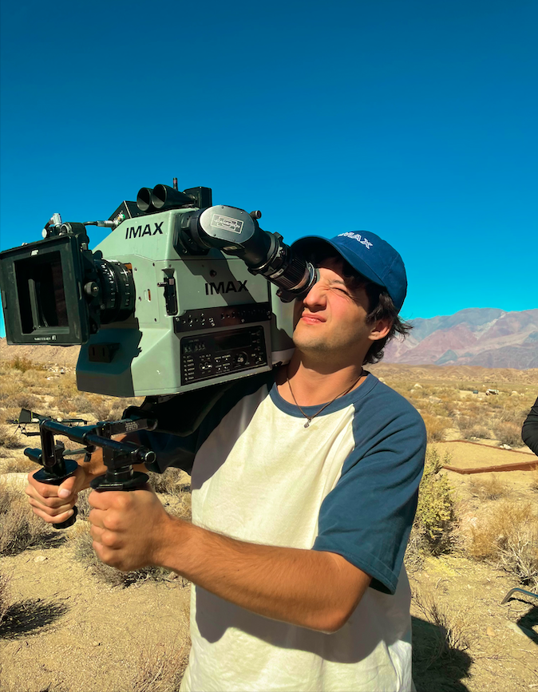

Alexander Barsanti
I'm a motivated post-production professional specializing in editing, color, and visual effects. Originally from the suburbs of New York City, I studied under top 3D modelers and animators at CalArts and am now building hands-on experience on sets at USC. I've learned to adapt quickly and collaborate across disciplines to finish projects at a high standard. I'm excited to collaborate with industry teams to bring projects to their best possible finish.